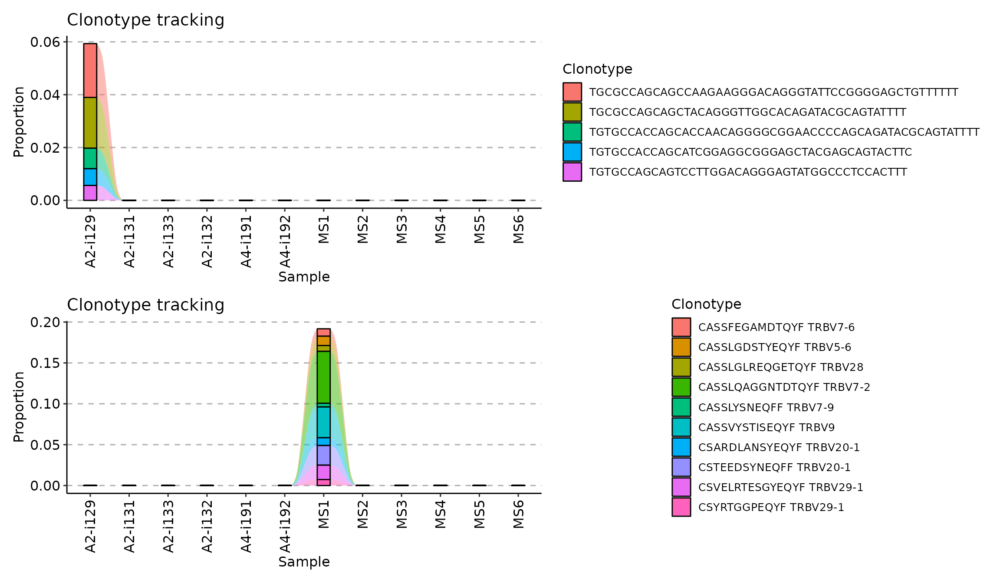
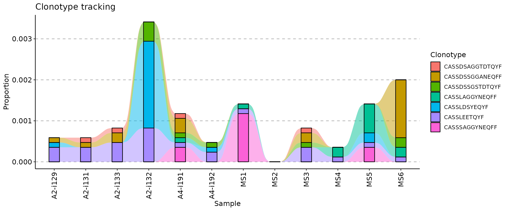
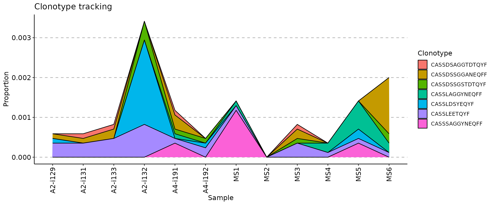
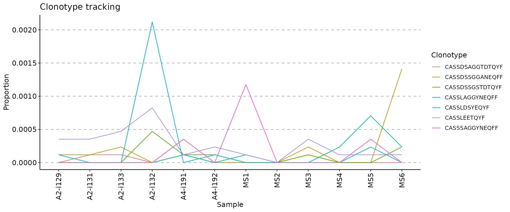
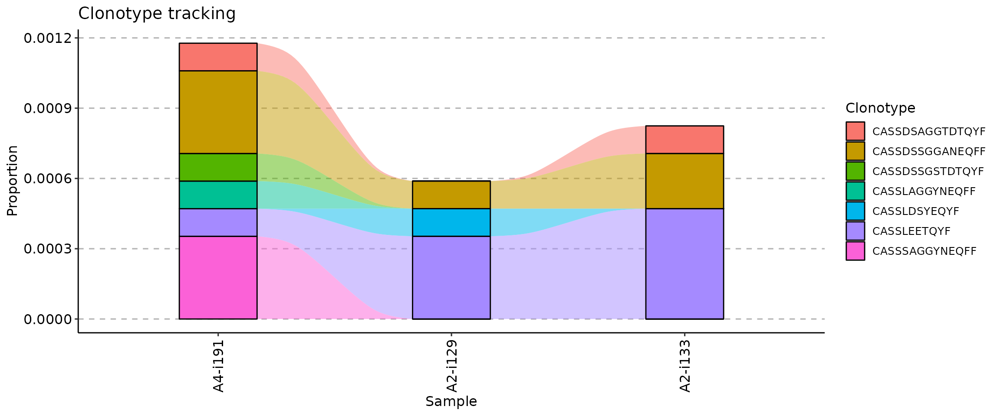
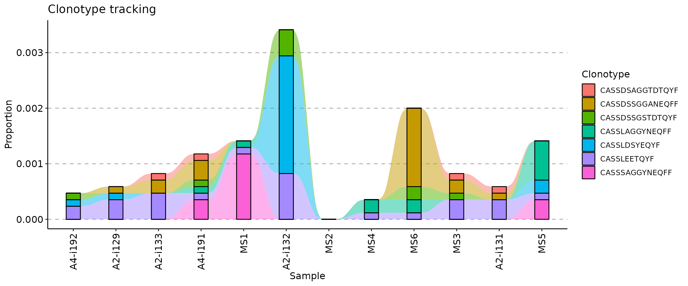
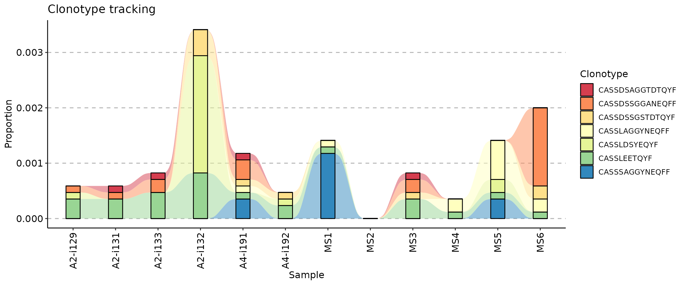

Tracking clonotypes across time points in immunarch
ImmunoMind
support@immunomind.io
Source:vignettes/web_only/v8_tracking.Rmd
v8_tracking.RmdTracking of clonotypes
Clonotype tracking is popular approach to monitor changes in frequency of clonotypes of interest in vaccination and cancer immunology. For example, a researcher can track a clonotype of across different time points in pre- and post-vaccination repertoires. Or analyse growth of malignant clonotypes in tumor sample.
Various methods of clonotype tracking are integrated into the one trackClonotypes function. Currently, there are three methods to choose from. The output of trackClonotypes can be immediately visualised with the vis function.
Tracking the most abundant clonotypes
The simplest approach is to choose the most abundant clonotypes from one of the input immune repertoires and track across all immune repertoires in a batch. Arguments .which and .col are used to choose the immune repertoire, the number of clonotypes to take from it and which columns to use.
To choose the 10 most abundant clonotypes from the first repertoire and track them using their CDR3 nucleotide sequence:
tc1 <- trackClonotypes(immdata$data, list(1, 5), .col = "nt")
Value list(1, 5) of the .which argument (second argument) means to choose 10 clonotypes from the 1st repertoire in the input list of repertoires immdata$data. Value "nt" of the .col argument means that the function should take CDR3 nucleotide sequences only.
To choose the 10 most abundant amino acid clonotype sequences and their V genes from the “MS1” repertoire to track:
tc2 <- trackClonotypes(immdata$data, list("MS1", 10), .col = "aa+v")
Value list("MS1", "10") of the .which argument means to choose 10 clonotypes from the repertoire named “MS1” in the input list of repertoires immdata$data. Value "aa+v" of the .col argument means that the function should take both CDR3 amino acid sequences and V gene segments of the most abundant clonotypes.
Visualisation of both approaches:

Tracking clonotypes with specific nucleotide or amino acid sequences
In order to track specific clonotype sequences, you can provide nucleotide or amino acid sequences as the .which argument, along with the column .col specifying in which columns to search for sequences. For example, to track seven CDR3 amino acid sequences specifyed below you need to execute the following code:
target <- c("CASSLEETQYF", "CASSDSSGGANEQFF", "CASSDSSGSTDTQYF", "CASSLAGGYNEQFF", "CASSDSAGGTDTQYF", "CASSLDSYEQYF", "CASSSAGGYNEQFF") tc <- trackClonotypes(immdata$data, target, .col = "aa") vis(tc)

Tracking clonotypes with specific sequences and gene segments
An improvement over the previous approach, it is possible to track clonotypes using information about both sequences and gene segments. Support you have a data frame of sequences with specific CDR3 sequences and gene segments. We will simulate this by choosing the 10 most abundant clonotypes from the first repertoire in the batch:
target <- immdata$data[[1]] %>% select(CDR3.aa, V.name) %>% head(10) target
## # A tibble: 10 x 2
## CDR3.aa V.name
## <chr> <chr>
## 1 CASSQEGTGYSGELFF TRBV4-1
## 2 CASSYRVGTDTQYF TRBV4-1
## 3 CATSTNRGGTPADTQYF TRBV15
## 4 CATSIGGGSYEQYF TRBV15
## 5 CASQGDSFNSPLHF TRBV4-1
## 6 CASSPWTGSMALHF TRBV27
## 7 CASSQDMGGRNTGELFF TRBV4-1
## 8 CASSEEPRLFGYTF TRBV2
## 9 CASSQPGQGGGDEQFF TRBV4-1
## 10 CASSWVARGPYEQYF TRBV6-6Supply this data frame as an argument value to the .which argument to track target clonotypes:
tc <- trackClonotypes(immdata$data, target) vis(tc)

Note that you can use any columns in the target data frame, such as both CDR3 nucleotide and amino acid sequences and any gene segments.
Visualisation of tracking
There are three ways to visualise clonotype tracking, depending on your research and aesthetic needs. To choose the type of plot, you need to provide the ".plot" parameter to the vis() function, specifying one of three plot types: - .plot = "smooth" - used by default, a visualisation using smooth lines and stacked bar plots; - .plot = "area" - visualise abundances using areas under the abundance lines; - .plot = "line" - visualise only lines, connecting levels of abundances of a same clonotype between time points.
target <- c("CASSLEETQYF", "CASSDSSGGANEQFF", "CASSDSSGSTDTQYF", "CASSLAGGYNEQFF", "CASSDSAGGTDTQYF", "CASSLDSYEQYF", "CASSSAGGYNEQFF") tc <- trackClonotypes(immdata$data, target, .col = "aa") vis(tc, .plot = "smooth")

vis(tc, .plot = "area")

vis(tc, .plot = "line")

Changing the order of samples
The .order argument of the vis function controls the order of samples in the visualisation. You can pass either indices of samples you plan to visualise or sample names.
## [1] "A2-i129" "A2-i133" "A4-i191"

If your metadata contains information about time such as timepoints for vaccination or tumor samples, you can use it to re-order samples accordingly. In our examples immdata$meta does not contain information about timepoints, so we will simulate this case.
First, we create an additional column in the metadata with randomly choosen timepoints:
## # A tibble: 12 x 7
## Sample ID Sex Age Status Lane Timepoint
## <chr> <chr> <chr> <dbl> <chr> <chr> <int>
## 1 A2-i129 C1 M 11 C A 7
## 2 A2-i131 C2 M 9 C A 10
## 3 A2-i133 C4 M 16 C A 8
## 4 A2-i132 C3 F 6 C A 12
## 5 A4-i191 C8 F 22 C B 6
## 6 A4-i192 C9 F 24 C B 4
## 7 MS1 MS1 M 12 MS C 1
## 8 MS2 MS2 M 30 MS C 5
## 9 MS3 MS3 M 8 MS C 11
## 10 MS4 MS4 F 14 MS C 3
## 11 MS5 MS5 F 15 MS C 2
## 12 MS6 MS6 F 15 MS C 9Next, we create a vector with samples in the right order, according to the “Timepoint” column (from smallest to greatest):
sample_order <- order(immdata$meta$Timepoint)
Sanity check: timepoints are following the right order:
immdata$meta$Timepoint[sample_order]
## [1] 1 2 3 4 5 6 7 8 9 10 11 12Samples, sorted by the timepoints:
immdata$meta$Sample[sample_order]
## [1] "MS1" "MS5" "MS4" "A4-i192" "MS2" "A4-i191" "A2-i129"
## [8] "A2-i133" "MS6" "A2-i131" "MS3" "A2-i132"And finally, we visualise the data:
vis(tc, .order = sample_order)

It is possible to create a one-liner with the full pipeline from ordering to plotting:

Changing the colour palette
If you want to change the colour palette, add a ggplot2 scale_fill_* function to the plot. We recommend using scale_fill_brewer:
vis(tc) + scale_fill_brewer(palette = "Spectral")

vis(tc) + scale_fill_brewer(palette = "RdBu")
Run ?scale_fill_brewer in the R console to learn more about ColorBrewer and it’s colour schemes.
Get in contact with us
Can not find an important feature? Have a question or found a bug? Contact us at support@immunomind.io